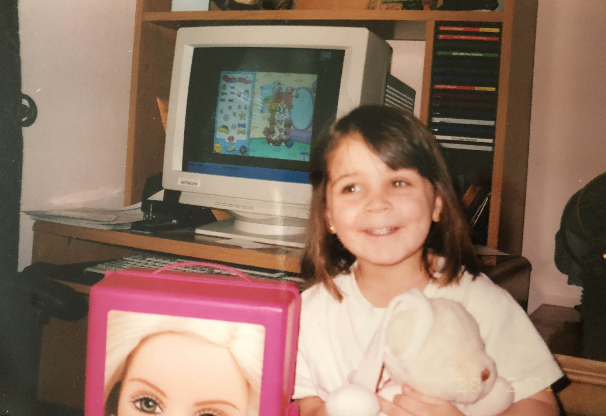

Hi! I’m Gabriella. I was born and raised in NYC and recently transferred to Parsons for Design and Technology. Previously I had been studying Computer Science but wanted to focus more on my creative side. I’ve always enjoyed art and photography, and have more recently become interested in design. Over this past summer, I visited the design museum in Zürich and it quickly became one of my favorite places. In my free time, I enjoy making collages, taking photos, creating websites and working on other projects.
